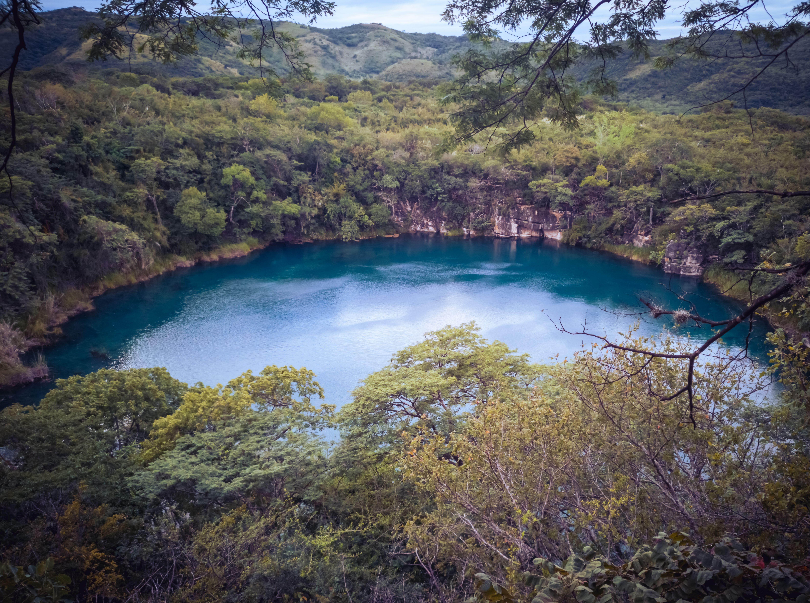
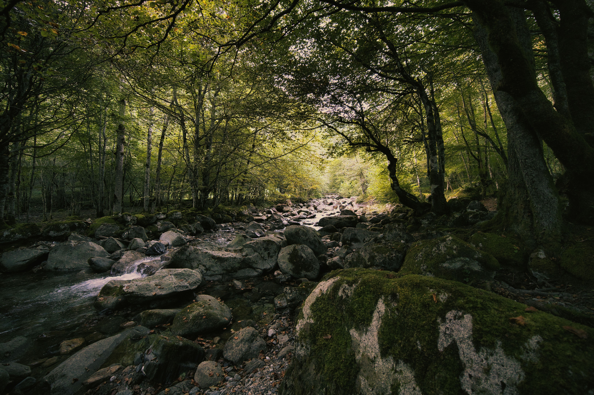

Rincones llenos de mágia
Las Cascadas Feericas
Ocultas entre la vegetación de los bosques del este, las Cascadas Feéricas son uno de los paisajes más visitados de Elarion. Sus aguas cristalinas descienden entre antiguas formaciones rocosas y, al caer la tarde, pequeñas luces comienzan a aparecer entre la niebla, dando al lugar una apariencia verdaderamente mágica.

Las Montañas de Aester
En el extremo norte de Elarion se elevan las Montañas de Aster, conocidas por sus picos nevados y sus impresionantes vistas. Es un destino ideal para excursionistas y viajeros que no tengan miedo a las alturas.

Lago Espejo
Sus aguas tranquilas reflejan el cielo y las montañas que lo rodean con una claridad casi perfecta. Durante las primeras horas de la mañana, la superficie del lago puede parecer un segundo mundo suspendido bajo los pies de los visitantes.

Las Ruinas de Valdoria
Restos de una antigua ciudad construida siglos antes de la aparición de los primeros viajeros. Sus calles, torres y construcciones parcialmente derrumbadas todavía pueden recorrerse, aunque gran parte de su historia continúa siendo un misterio.

El Bosque de los Susurros
Un extenso bosque cubierto por una niebla permanente y atravesado por antiguos senderos. Los habitantes locales aseguran que, cuando el viento atraviesa los árboles, es posible escuchar voces contando historias olvidadas.
